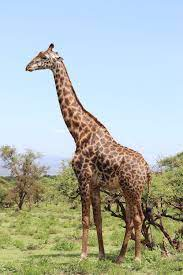
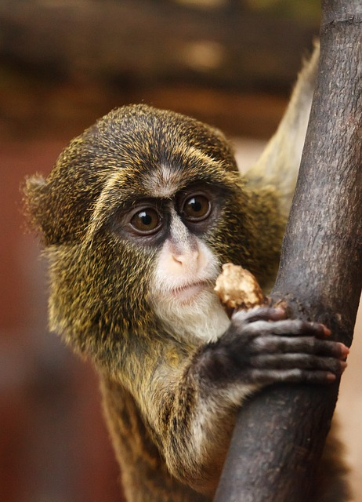

<!DOCTYPE html>
<html lang="en">
  <head>
    <meta charset="UTF-8" />
    <title>Animals</title>
    <meta http-equiv="X-UA-Compatible" content="IE=edge" />
    <meta name="viewport" content="width=device-width, initial-scale=1.0" />
    <link rel="stylesheet" href="../css/style.css" />
  </head>
</html>
<body class="Home">
    <header class="container">
      <nav>
        <a href="../index.html">Home</a>
        <a href="#" class="current">Animals</a>
        <a href="../pages/movies.html">Movies</a>
        <a href="../pages/places.html">places</a>
        <a href="../pages/hobbies.html">hobbies</a>
      </nav>
    </header>
<link rel="preconnect" href="https://fonts.googleapis.com">
<link rel="preconnect" href="https://fonts.googleapis.com">
<link rel="preconnect" href="https://fonts.googleapis.com">
<link rel="preconnect" href="https://fonts.gstatic.com" crossorigin>
<link href="https://fonts.googleapis.com/css2?family=Libre+Baskerville&family=Source+Serif+4:opsz@8..60&family=Tinos&display=swap" rel="stylesheet">
</head>
  <body>
    <header>
    </header>
    <main class="container">
      <h1>Animals I would like to see</h1>
      <!-- <main class="container"> -->
      <div class="grid-container">

        <div>
      
      </div>
      <div>
      
      </div>
      <div>
        
      </div>
      <div>
        
      </div>
      
      <div>
        
      </div>
      </div>
       
      <div id="main-image">
        
        <div id="right">
          <p>I hold a deep fascination with several magnificent creatures that I wish to witness in their natural habitats before they face the threat of extinction. Among these remarkable animals are the panda, with its distinctive black-and-white coat, an emblem of conservation efforts. Observing these gentle giants in China's bamboo forests would be a dream come true.
<p>Monkeys, with their playful antics and vibrant diversity, are another enchanting group. From the mischievous capuchins in the Amazon rainforest to the highly intelligent orangutans in Borneo, the chance to witness their behavior and social interactions would be both educational and heartwarming.
Giraffes, the graceful giants of the African savanna, captivate with their towering necks and unique spot patterns. To witness them roaming freely and gracefully amid the acacia trees would be a privilege.</p>

<p>Foxes, known for their adaptability and cunning, hold a special allure. Whether it's the Arctic fox in its icy realm or the swift red fox in the woodlands, observing these elusive creatures would be a testament to nature's diversity.
The vibrant plumage and captivating intelligence of parrots make them a must-see. In the lush rainforests of South America, encounters with these colorful avian wonders would be a sensory delight.<p>
Wolves, symbols of the untamed wilderness, exude a powerful mystique. Witnessing a wolf pack's intricate social dynamics in the forests of North America or Europe would offer a glimpse into the secrets of the wild.
These animals embody the rich tapestry of our planet's biodiversity. Seeing them in their natural habitats would not only be a personal thrill but also a reminder of our collective responsibility to protect and preserve these incredible species for future generations.</p>


</p>
    </div>
      
      
    </main>
    <footer class="container">
    <p>&copy; 2023 Bryan Ramirez</p>
    </footer>
    <script src="../scrpt.js"></script>
  </body>
</html>
</main>